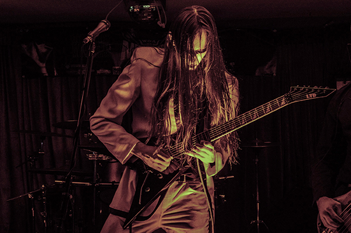

On the other side of the door...
Formed as a solo recording project in 2016, Messora has become a band that obscures and challenges genre. To the band, the music comes as what feels best in the moment. To the fans, it is a kaleidoscope of sound that appears different at every glance and to every eye. Messora has been described as Death Metal, Black Metal, Thrash Metal, Progressive Metal, Melodic Metal, and Doom Metal by fans and showgoers. The elements that make up the music may seem familiar to some, yet the whole remains a challenge to define.
“... Messora was a whirlwind on stage. It was hard to believe that a half hour had passed when they began to play their final song, as each song had layered onto each other leaving viewers with a feeling that the experience was almost surreal.”
- Splice Media Group
The band knows how to set themselves apart from others musically as well as aesthetically, with showmanship and presentation second only to musical performance during their live show. They demand attention with their presentation, but keep it with the strength of their performance and musicianship. Messora always delivers, visually, aesthetically and musically.
"Combining a variety of genres, the group made good impressions on those who shows up early with their tight musicianship and ability to change pace on a moment’s notice”
- Apt 613
Messora has headlined shows in Kingston, Ottawa and Montréal, and opened for popular international bands such as Replacire, Arsonists Get All The Girls, Wolfheart, Mors Principium Est and Carach Angren.
To widespread acclaim from fans and critics, Messora released their debut album The Door on October 4th 2019.
- 